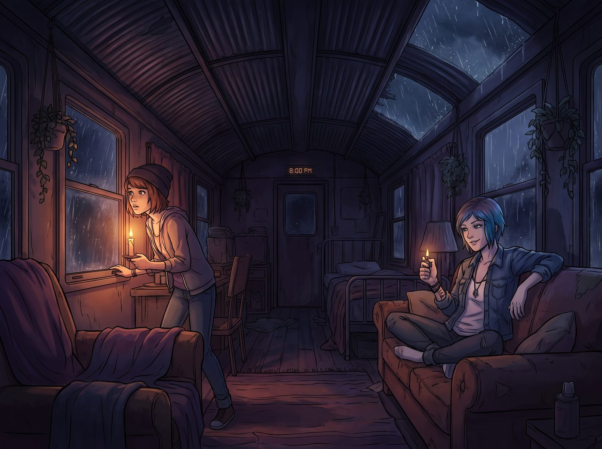

動機轉移的絕殺

Chloe 的嘴砲絕技，在阿卡迪亞灣的街頭從來沒有吃過敗仗。
這套技能本質上是一種進攻型街頭心理學：敏銳地捕捉對方話語中的邏輯漏洞、虛偽的道德高地，或者潛意識的弱點，然後用最具攻擊性的語言將其放大，逼迫對方破防、讓步。
這套技能對付自大的毒販、虛偽的校長，甚至帶著槍的混混都無往不利。因為這些人的共同點是：他們都想控制 Chloe。
而只要有控制，就會有反抗。Chloe 是反抗的宗師。
但在上週三那個停電的暴雨之夜，她引以為傲的街頭絕技，卻在 Lily 這種行政黑魔法師面前，像打在棉花上的重拳，不僅被完美化解，還被借力打力，完成了物理意義上的反向收割。
一、暴雨夜的發電機罷工
晚上八點，營地老舊的柴油發電機發出一聲慘叫，徹底罷工。車廂陷入一片漆黑，只有暴雨砸在鐵皮車頂上的轟鳴聲。
Max 點起了蠟燭，擔憂地看著窗外。Chloe 則翹著腳坐在沙發上，把玩著打火機，等著有人來求她這個首席機械師出馬。在街頭混了這麼多年，她深知誰先開口求人，誰就失去了談判籌碼。
如果 Lily 敢用命令的口吻說「Chloe，去把發電機修好」，Chloe 的嘴砲介面就會立刻彈出選項，她會反唇相譏「實習生，妳的合規手冊裡沒有教妳怎麼跟前輩說請嗎」。
但 Lily 根本沒有看她。
Lily 只是平靜地打開了筆記本電腦，藉著螢幕微弱的光芒，撥通了一部衛星電話。「您好，是特種電力維修公司嗎？是的，我們是受聯邦監管的藝術營地。我們的發電機出現了核心故障。」Lily 的聲音軟糯而公事公辦，「是的，我明白現在是暴雨紅色預警，夜間跨區搶修需要支付三千五百美元的緊急出勤費，以及一千兩百美元的危險天氣津貼……沒問題，請立刻派人來，走國防部的帳。」
坐在沙發上的 Chloe 眉頭一皺。三千五百美元？！拿來買啤酒和黑膠唱片能塞滿半個車廂！
二、完美的進攻開局
「喂，實習生。」Chloe 忍不住開口了，她的嘴砲雷達開始作響，「妳腦子進水了嗎？那台破發電機不過就是化油器堵了或者傳動軸卡死，妳花將近五千美金請人來修？妳這叫浪費公帑！」
這是一個完美的進攻開局。Chloe 站在了替團隊省錢的道德高地上。
但 Lily 沒有反駁。她甚至沒有掛斷電話，只是用手捂住話筒，轉過頭，用一種極度真誠、甚至帶著一絲關懷智障的慈悲眼神看著 Chloe。
「Chloe 學姐，我完全同意妳對故障原因的診斷，妳在機械方面的直覺總是令人驚嘆。」Lily 先給了一個毫無破綻的讚美，然後話鋒一轉：「但是，根據聯邦職業安全與健康管理局的條例，在這種極端氣候下，未持有A級重型工業電力維修執照的人員，嚴禁接觸高壓發電設備。妳沒有執照，對吧？」
這就是 Chloe 最熟悉的套路——官僚主義的規則壓制。Chloe 的眼前彷彿浮現出了那些漂浮在空中的反擊關鍵字。她冷笑一聲，發動了嘴砲：「去他媽的執照和條例！我在修那些比妳年紀還大的改裝車時，妳的那些監察員還在穿紙尿褲呢！規矩是死人定的，現在我們需要的是電，不是廢紙！」
完美的街頭反擊。粗暴、直接、打破權威。
按照 Chloe 的經驗，接下來 Lily 應該會氣急敗壞地跟她爭辯合規的重要性，然後 Chloe 就能徹底掌握主動權，以勝利者的姿態去修機器。
三、被抽乾的攻擊著力點
然而，Lily 接下來的操作，直接擊碎了 Chloe 的認知模型。
「妳說得對，學姐。規則確實是死板的廢紙。」Lily 點了點頭，竟然直接同意了 Chloe 的觀點，瞬間抽乾了 Chloe 所有的攻擊著力點。
接著，Lily 嘆了口氣，推了推圓框眼鏡，語氣變得極度誠懇，甚至帶著一絲哀求：「但拋開規則不談，從客觀的物理層面來看……那台發電機的轉子外殼重達四百磅。要排出積水並重新校準傳動軸，需要至少一百二十磅的瞬間扭力，以及極度精密的微米級墊片調整。」
Lily 的目光緩緩掃過 Chloe 纖細的手臂和帶著鉚釘的皮夾克：「我的數據模型顯示，沒有專業的液壓工具，僅憑街頭經驗和常規扳手，強行拆卸的失敗率高達百分之九十四。而一旦妳因為力量不足或精度不夠導致轉子報廢，我不僅要提交一份長達四十頁的非授權人員破壞資產事故報告，還要額外填寫十二份報廢申請。」
Lily 重新把電話舉到耳邊，對著 Chloe 露出了一個乖巧的微笑：「所以，算我求妳了，Chloe 學姐。為了保護妳的自尊心，也為了保護我的手腕不再因為打字而得腱鞘炎，請妳千萬、絕對、不要去碰那台發電機。」
說完，她對著電話那頭說：「抱歉久等了，請派工程隊過來吧，越快越好。」
四、無法反擊的標籤
在那個瞬間，Chloe 覺得自己的大腦過載了。
她的嘴砲系統徹底當機。因為 Lily 的防禦體系裡，根本沒有控制她。
Lily 沒有命令她。Lily 同意了她對規則的蔑視。Lily 甚至誇獎了她的機械直覺。
但 Lily 用一種無比禮貌、無法反駁的數據，在 Max 和 Kate 面前，給 Chloe 貼上了一個致命的標籤：一個空有街頭經驗，但缺乏實力、會把事情搞砸、最後只會給行政人員增加麻煩的非授權人員。
最狠的是，Lily 最後那句「為了保護妳的自尊心」。這句話對 Chloe 這種自尊心比天還高的龐克女孩來說，簡直是把核彈塞進了她的嘴裡。
如果 Chloe 乖乖坐著，就等於承認了自己是個沒有液壓工具就搞不定四百磅鐵疙瘩的廢物。如果要反擊，她不能用嘴，因為 Lily 已經不跟她吵了。
唯一能證明 Lily 的數據模型是放屁的方法，只有一個。
五、衝進暴雨的證明
「啪！」Chloe 猛地站了起來，一把奪過 Lily 的衛星電話，直接按下了掛斷鍵。
「把妳的破數據模型塞進妳的碳粉匣裡吧，書呆子。」Chloe 咬牙切齒地抓起桌上的重型手搖扳手和防水手電筒，一腳踢開了車廂的門，走進了狂風暴雨中。「給老娘計時！超過一個小時修不好，我把那台發電機吃下去！」
門砰地一聲關上了。車廂裡再次陷入安靜。
Max 愣愣地看著門口，又轉頭看了看 Lily：「外面……正在下冰雹欸。」
Lily 平靜地將衛星電話收進抽屜——那通電話根本沒有撥號，螢幕一直停留在主畫面。她打開試算表，在本月維修預算那一欄裡，將原本準備支出的金額劃掉，並將其轉入了可自由支配的營地多媒體娛樂基金。
「沒關係，Max 學姐。」Lily 拿起桌上的熱牛奶，滿意地喝了一口，「Chloe 學姐的腎上腺素和證明自己的渴望，會讓她在冰雹中保持足夠的體溫。這就是人體工程學的奇妙之處。」
四個小時後。渾身是泥、凍得像冰棍一樣的 Chloe，在一陣轟鳴聲中，重新點亮了車廂的燈光。她得意洋洋地把扳手拍在 Lily 的桌上，大聲嘲笑 Lily 的百分之九十四失敗率是多麼愚蠢。
而 Lily 只是乖巧地鼓了鼓掌，並遞上一杯熱可可，真誠地說：「學姐，妳真的太厲害了，妳打破了聯邦統計學的極限。」
這讓 Chloe 爽了整整三天。
六、遲來的真相
想到這裡，坐在木箱上的 Chloe 夾著香菸的手指微微顫抖。
她看著眼前這個自稱是ISFJ守衛者、正一臉純良地吃著 Kate 烤的燕麥餅乾的十九歲女孩。
「妳……妳那天連電話都沒撥出去，對吧？」Chloe 終於反應過來了，聲音裡帶著一絲絕望，「那根本不是什麼狗屁條例，妳就是在激將我？我的嘴砲……其實是妳預先設定好的觸發條件？！」
「這在行政學上叫做動機轉移，學姐。」Lily 推了推圓框眼鏡，眼神無辜，「我只是將妳反抗權威的動能，精準地重定向到了修復發電機這個任務上。我沒有強迫妳，是妳自願在冰雹裡工作了四個小時，為我們省下了一大筆錢。妳甚至還覺得自己贏了。」
Lily 甜美地笑了：「這就是為什麼，街頭智慧教妳如何打贏一場架；而行政黑魔法，教妳如何讓別人心甘情願地替妳打架，打完還要謝謝妳。」
Chloe 徹底癱倒在沙發上，雙手捂住臉，發出了一聲生無可戀的哀嚎。
「Max……」Chloe 從指縫裡發出悶悶的聲音，「如果哪天這實習生說要把我賣去黑市換太陽能板，請妳一定要攔住我……因為我怕我會忍不住幫她討價還價。」